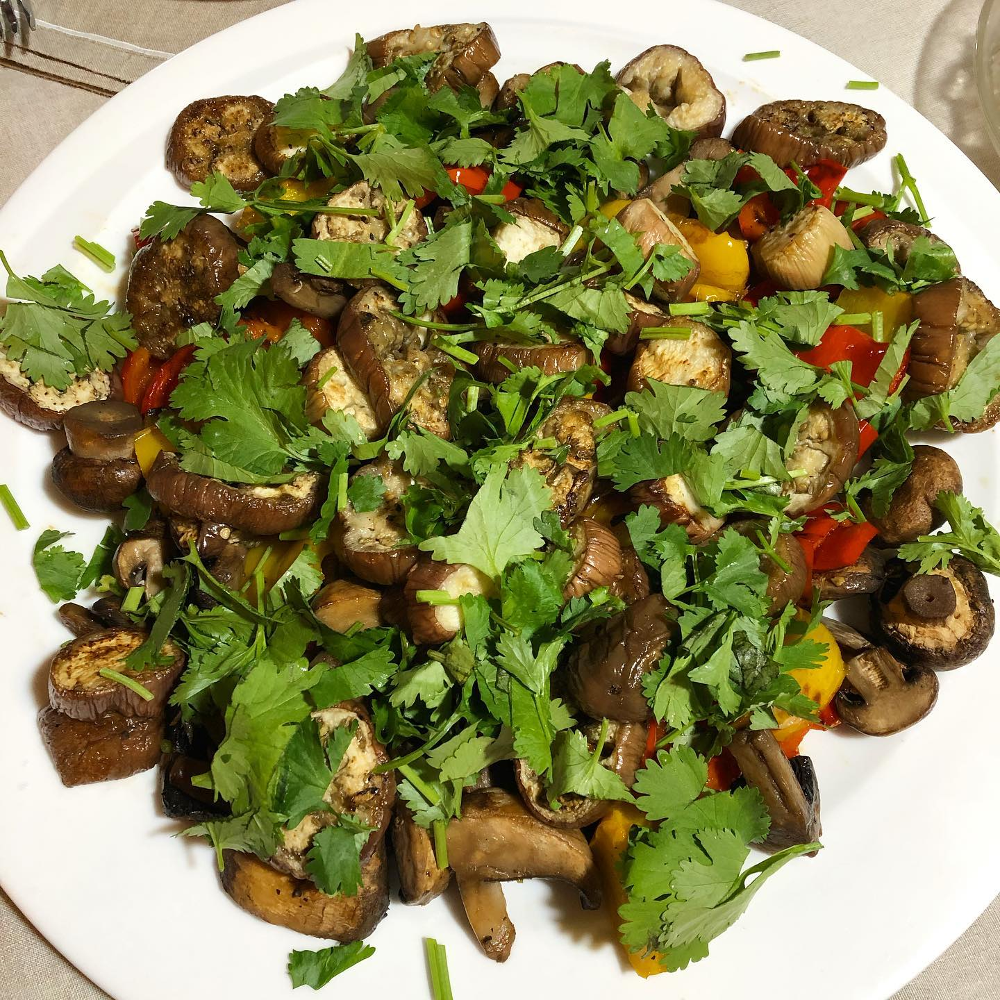
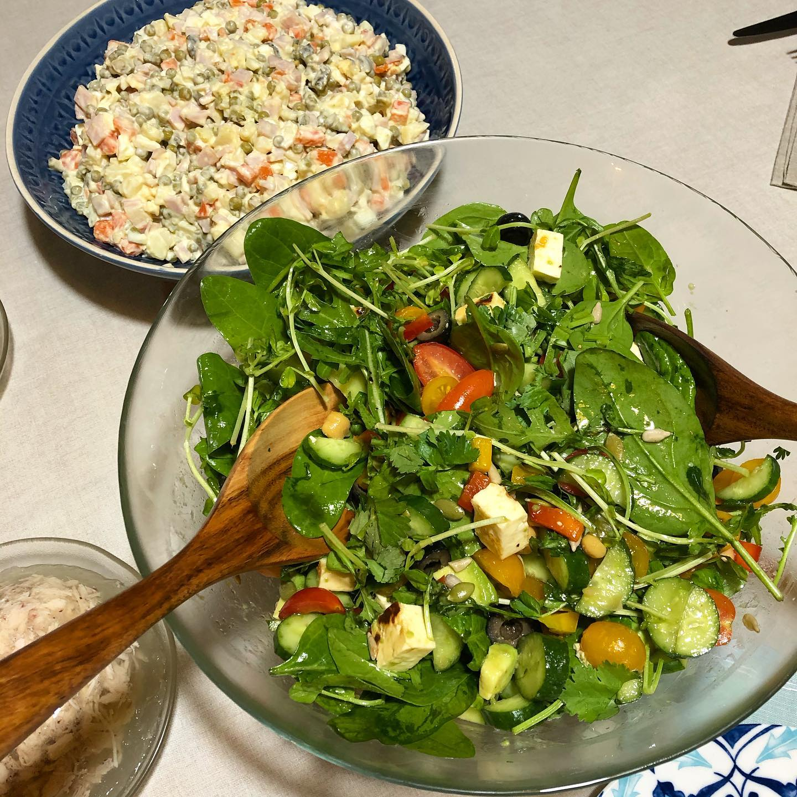
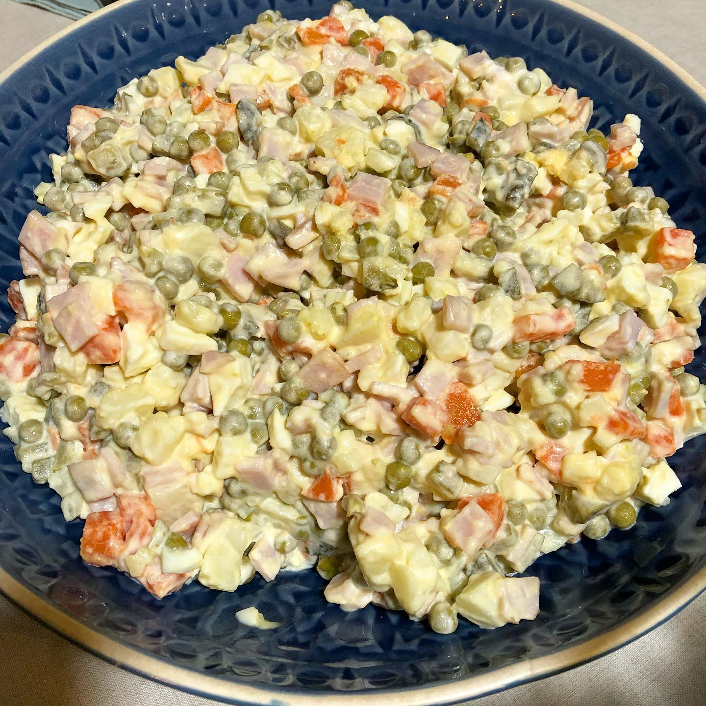
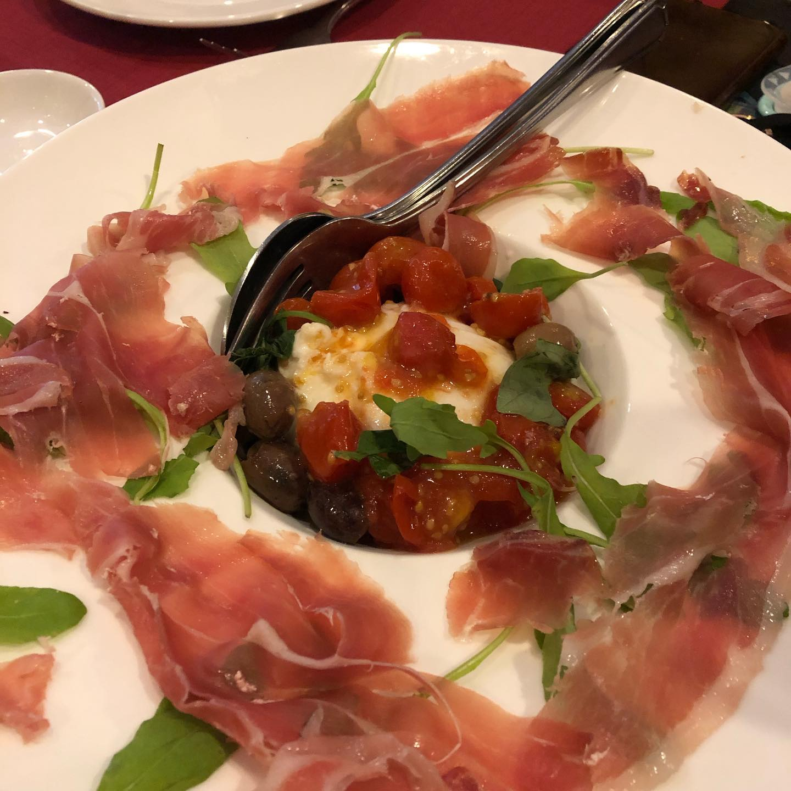
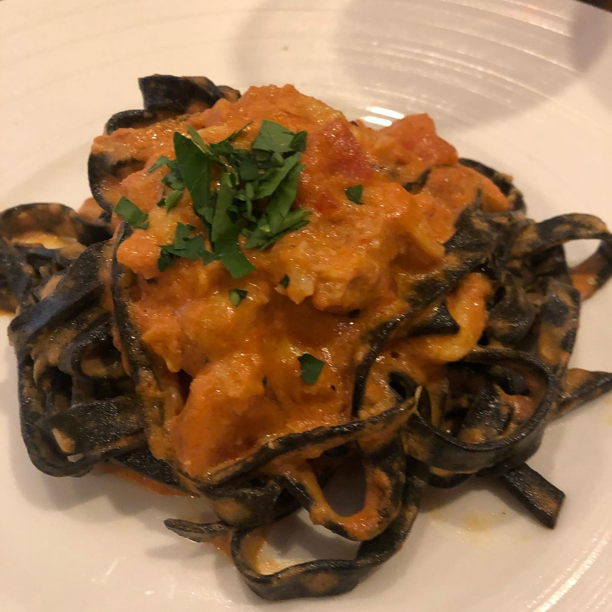
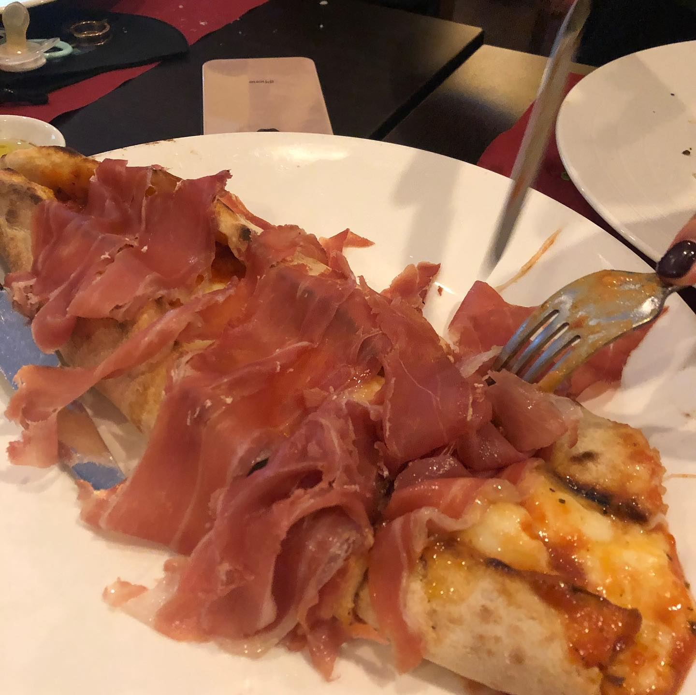

HAPPY NEW YEAR FOLKS!!! We can’t believe the toughest and the longest year is over! Gosh, 2020, trust us, we learned all the lessons you wanted to teach us, we’ve counted all our blessings thousand times and we set our priorities right this time... thank you for all the learnings but buzz off, we are so over you😄 2️⃣0️⃣2️⃣1️⃣ we’ve been waiting for you sooooo soooo long, please be kind to us - humans. In fact, if you are just slightly better than 2020, we will be happy AF 😄 We had a wonderful start of the year in a great company with lots of traditional food from motherland that we cooked ourselves (will be happy to share recipes soon) 😊some of it not so healthy but hey, what’s the point of running, if you can’t get your cheat meal, right 😉? The first day of 2021 started with a pouring tropical rain (which hasn’t stopped yet) and Italian lunch with friends and family and it couldn’t be better!!! 2021 thank you for a clean start and washing away 2020 ☺️! It will only get better, folks, have a wonderful year ahead! Hugs and kisses, Arseny and Lily! ☺️😉 __ #byebye2020 #happynewyear2021 #family #friends #homemadefood #cookathome #sgeats #sgfoodie #foodsg #singapore #newyear
2021-01-01 23:27:25
Back to main page